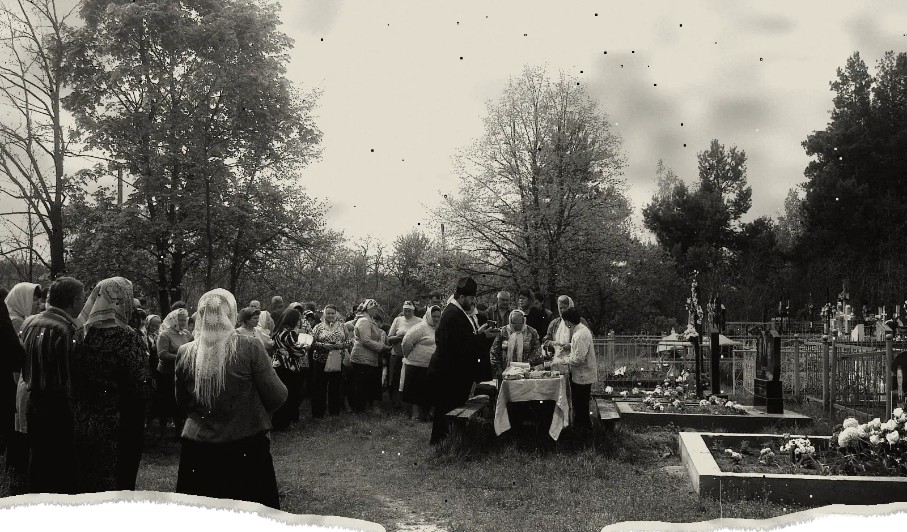
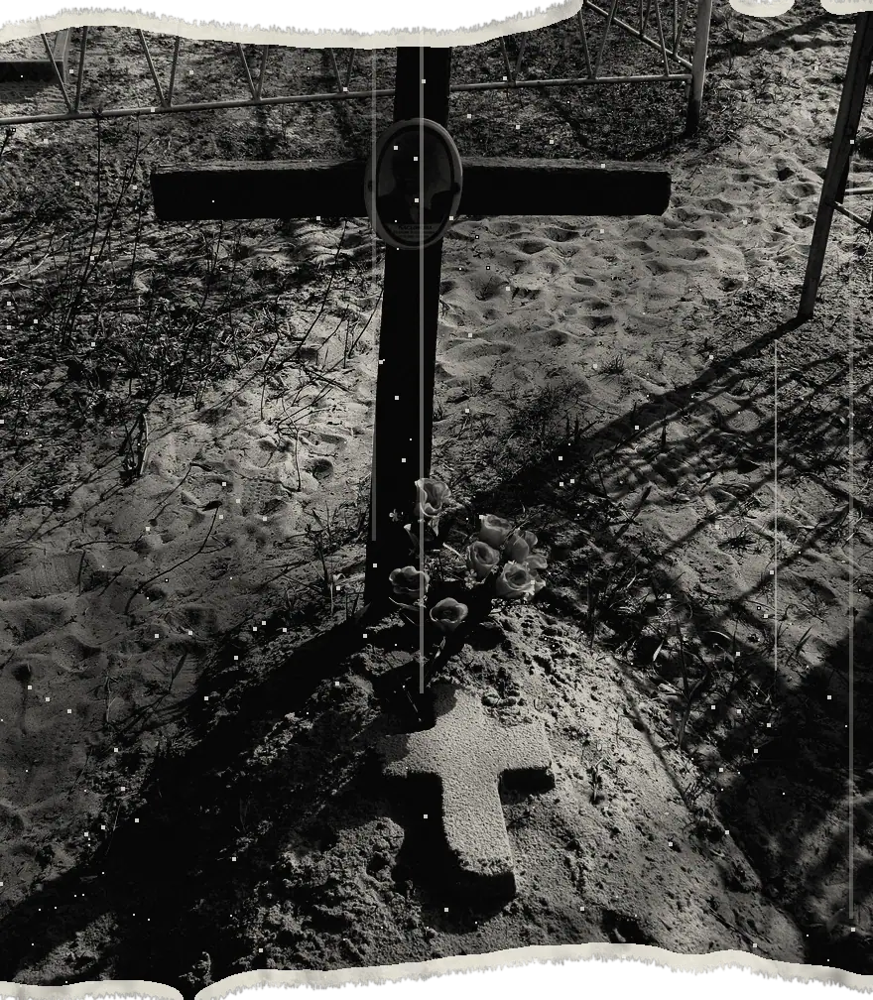
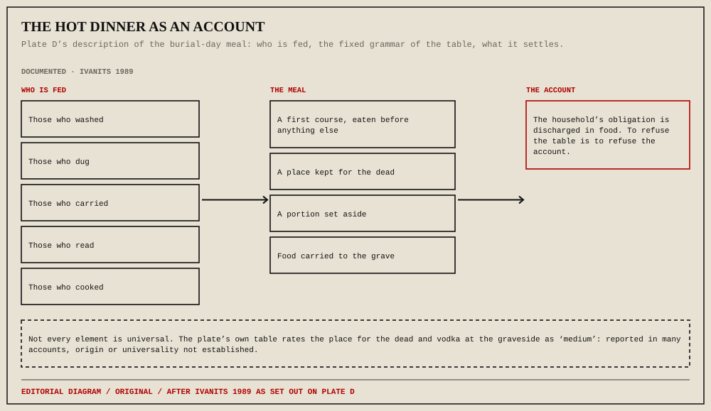

VOL. I · PLATE D · 04 / 09
THE TABLE
Feeding the dead, feeding the living
The memorial meal is the place where the dead is most directly treated as a person with preferences, a place and an appetite.
Documented 19th–21st centuries · Russia; one Ukrainian example, marked · Orthodox memorial practice; household custom

D / 01
The hot dinner
On the day of burial everyone who came was fed. Zelenin’s survey of East Slavic ethnography (1927; 1991 edition, § 136, pp. 356–357) explains the name of the ‘hot dinner’ (Russian goriachii, Belarusian garachyi): hot bread was always served, broken by hand and not cut with a knife, so that steam would rise. The dead were thought to need food like the living, and to feed in part on the steam from it. Ukrainians broke fresh bread in two and put it on the windowsill so that the hot steam would reach the dead.
While the dead person was still in the house they were given bliny: the first, still hot and sometimes smeared with honey, was put on the bench at the head, on the windowsill or on the shelf of icons. At the funeral and the wakes a separate place was laid for the dead, either at the common table or at a special table in the corner under the icons, and the first spoonful of any dish and the first glass of water were poured out at the corner of the table for them. The usual dishes were kutia (also kolivo, kanun), boiled barley or wheat in honey diluted with water, then bliny, honey kisel, fried eggs and porridge; the main drink was beer or braga sweetened with honey. In the Russian North, guests were given a wooden spoon after dinner in memory of the dead. Zelenin merges Russian, Ukrainian and Belarusian material and cites the archive of the Russian Geographical Society by volume and number; those files were not seen, and he gives no dates.
The sequence of the meal was strictly regimented across Russian provinces (Kremleva 1999, pp. 526–527; Baiburin 1993, pp. 110–112). It began with three spoonfuls of kutia (kanun, kolivo), which every guest had to taste before any other food. Knives and forks were strictly banned as piercing instruments that could harm the unseen guest; only wooden spoons were used. After kutia came hot cabbage soup (shchi) or fish broth (ukha) served with hot bread, then porridge or noodles, followed by bliny with honey. The meal ended with thick oat or berry kisel; drinking the kisel was the ritual signal for diners to rise, thank the hosts, and disperse.

| Food | Documented context | Notes | Confidence |
|---|---|---|---|
| Kutya / kolivo | Boiled grain with honey; church memorial service; household table | The handbook names wheat with honey; Zelenin names barley or wheat in honey and water; rice and raisins are not in the passages read | documented |
| Bliny | First blin, hot and sometimes smeared with honey, put by the dead person while still in the house; bliny served at funerals and wakes (Zelenin, undated) | Also a calendar food; the same object, a different argument | documented |
| Bread | Served hot and broken by hand, not cut; fresh bread laid on the windowsill (Ukrainian) | Steam is the reason Zelenin gives; bread carried to the grave is not in the passage read | documented |
| Honey | Mixed into kutia, kisel and the beer; smeared on the first blin | The handbook reads honey as the sweet life of the Kingdom; Zelenin gives no symbolic reading | documented |
| Vodka | A bottle put in a man’s coffin ‘until recently’; poured on the table for the dead in Belarus | Zelenin names honey beer or braga as the main drink; the origin of vodka at meals is not established | medium |
| A place for the dead | A separate setting at the common table or at a table in the icon corner; first spoon and glass poured out at its corner | Zelenin gives it without a region | documented |
D / 04
Kutia, and the ambiguity of grain
Kutya is boiled grain sweetened with honey, and in its church form, kolivo, it is brought to the memorial service and blessed. The Novaia Skrizhal’ (1803, ch. XXIII, § 3) names boiled wheat with honey and gives the reading: the wheat that dies in the ground and then bears fruit stands for the resurrection of the dead, and the honey for the sweet, blessed life that awaits the righteous in the Kingdom of Heaven. It adds Simeon of Thessalonica’s reading of the seeds offered in the same way.
What ethnographic surveys show is that the funeral table was neither a purely canonical rite nor a mere 'pagan survival' (Baiburin 1993, pp. 110–115; Kremleva 1999, pp. 526–529). Church blessing of kolivo and the domestic serving of hot steam and honeyed grain functioned as interlocking parts of one commemorative dialogue. While theological manuals emphasised spiritual resurrection through the grain metaphor, peasant practice treated the meal as a reciprocal feeding that satisfied the dead, bound the community, and ensured the soul's peaceful departure without lingering to haunt the homestead.




Lent
When the table has to wait
The table follows the church calendar. A reference page on the parental Saturdays states that when someone died before or during Great Lent, the commemorations on the third, ninth and fortieth days were not held in mid-week, when there is no full Liturgy, but moved to the nearest Saturday. The same page says that church rules do not regulate the memorial meal at all and offers a single guideline, moderation. The meal is therefore a custom set inside a calendar, not a rite with its own canon; the household negotiates between the two. The page names no author and describes the rule in the past tense, so the atlas uses it as a statement of the rule, not as evidence of how many households followed it.

Lament at table
Fedosova’s lament on returning from the cemetery to the funeral feast
Плач при возвращении с кладбища к поминальному столу
Original
English translation
Excerpt Lines 1–14; the lament continues as the mourner addresses the assembled kin and the vacant place at table.
Sung when the funeral procession returns from the churchyard to the deceased's izba. The community sits down to the funeral banquet, but the lamenter makes visible the fundamental absence around which the meal is staged: the oak tables and memorial wine are served, yet the master's place remains an empty void.
Fedosova performed this lament for Barsov during their 1867–68 sessions. Notice how the sensory abundance of the wake (oak tables, silk cloths, wine) contrasts starkly with the irrevocable departure of the dead.
- белодубовы столы
- White oak tables; standard epic formula for festive and ritual furniture.
- зелено вино
- Green wine; traditional poetic designation for distilled grain vodka.
- милый ладушко
- Dear spouse/beloved; ancient vernacular term of intimate affection.
Source E. V. Barsov, Prichitaniya Severnogo kraia, vol. 1 (Moscow, 1872), p. 116, lines 1–14. · open source
Rights Public domain. Barsov died in 1917; published in 1872. Public domain in Russia and the United States.
Apparatus sources · related plates · terms
Sources for this plate
- azbyka-parent-saturdays Azbyka.ru editors — Roditelskie subboty (Parental Saturdays) (n.d.)
- zelenin1927 Zelenin, Dmitry K. — Vostochnoslavianskaia etnografiia (Russian translation of Russische (Ostslavische) Volkskunde, Berlin–Leipzig 1927), transl. K. D. Tsivina (1991 (German original 1927))
- skrizhal Veniamin (Krasnopevkov-Rumovskii), Archbishop — Novaia Skrizhal’ (1803 (read in a modern online edition))
- barsov1872 Barsov, Elpidifor Vasil’evich — Prichitaniia Severnogo kraia (1872–1886)
- kremleva1999 Kremleva, Irina A. — Pokhoronno-pominalnye obychai i obriady [Funeral and Memorial Customs and Rites] (1999)
- baiburin1993 Baiburin, Albert Kashfullovich — Ritual v traditsionnoi kul’ture (1993)
URLs, access dates and limitations are in the bibliography.